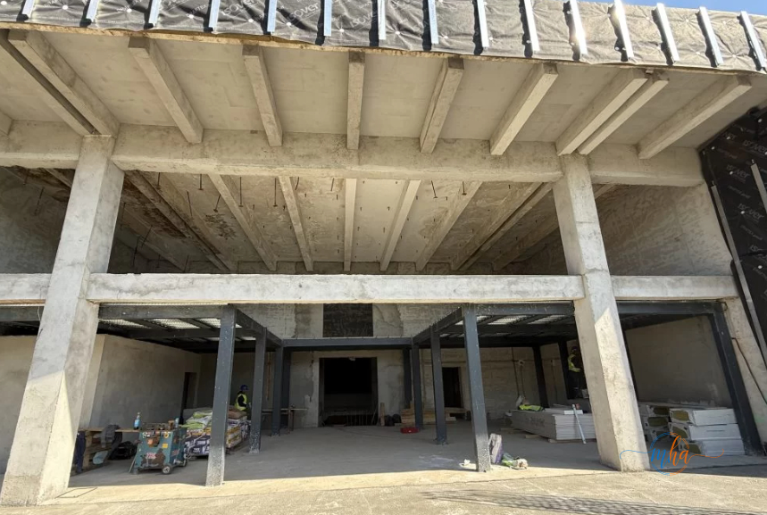
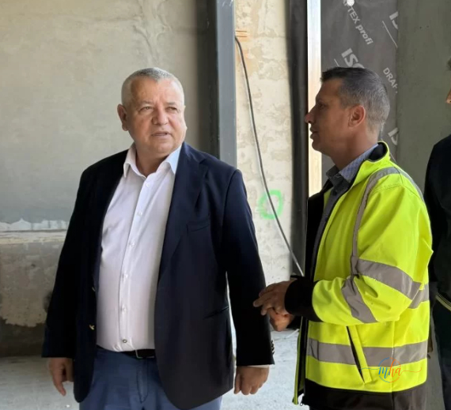

Lucrările de reabilitare și modernizare a Cinematografului „Porțile de Fier" din Drobeta-Turnu Severin au ajuns într-un stadiu avansat, iar clădirea începe deja să capete forma viitorului centru cultural modern pregătit pentru comunitate.
În perioada sezonului rece, echipele de muncitori au intervenit în special la interior, unde au fost realizate lucrări la instalațiile electrice și sanitare. Odată cu îmbunătățirea vremii, lucrările s-au concentrat și în exteriorul clădirii, iar progresul este vizibil.
Ce spune constructorul: acoperiș 100%, fațadă 70-80%
„Stadiul lucrărilor este destul de avansat. În perioada rece am lucrat la interior, la partea electrică și instalațiile sanitare, iar imediat ce vremea ne-a permis am ieșit la exterior. Acoperișul este finalizat în proporție de 100%. Se lucrează la fațadă, unde suntem destul de avansați, aproximativ 70–80%, iar în prezent ne concentrăm pe zona de acces în cinematograf și pe spațiile culturale. În ceea ce privește interiorul, în maximum o săptămână vor începe lucrările de finisaje interioare și deja au început achizițiile de echipamente."
Ce va oferi noul centru cultural comunității
Potrivit informațiilor transmise de administrația locală, cinematograful va include o sală modernă de cinema, dar și spații dedicate spectacolelor, expozițiilor și activităților educative. Proiectul transformă vechiul cinematograf într-un adevărat centru cultural multifuncțional pentru locuitorii municipiului.
Investiția reprezintă una dintre cele mai așteptate lucrări de reabilitare din oraș, cinematograful „Porțile de Fier" fiind un simbol al vieții culturale din Drobeta-Turnu Severin. Odată finalizat, spațiul va putea găzdui proiecții de film, piese de teatru, expoziții de artă și evenimente educaționale pentru toate categoriile de vârstă.
Investiția depășește 5 milioane de euro și este realizată din fonduri europene.

Zona de acces și interiorul cinematografului — lucrările de finisaje urmează să înceapă. Foto: MehedintiAzi.ro
Primarul Screciu: „Un viitor reper cultural pentru întreg județul"

Primarul Marius Screciu, în inspecție la șantierul cinematografului. Foto: MehedintiAzi.ro
Primarul municipiului Drobeta-Turnu Severin, Marius Screciu, spune că proiectul este unul de suflet atât pentru administrație, cât și pentru severineni, fiind considerat un viitor reper cultural pentru întreg județul.
- Acoperiș: finalizat 100%
- Fațadă: avansată 70–80%
- Instalații electrice și sanitare: finalizate
- Finisaje interioare: încep în maxim o săptămână
- Achiziții echipamente: în curs